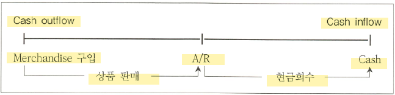

Accounting for Merchandising Operations
The operating cycle of a merchandising company
수익창출방법에 따른 company 구분
종류
Service company - 인적 용역을 제공하여 수익을 창출하는 회사
merchandising company (상기업) - 구매한 상품을 판매하여 수익을 창출하는 회사 → financial accounting
Manufacturing company (제조기업) - 자체 제조한 제품을 판매하여 수익을 창출하는 회사 → cost accounting
Merchandising company 회계처리의 특징
Merchandising company에서는 service company에서 발생하지 않는 merchandise의 purchase 및 sales revenue가 발생하며, 판매된 상품의 원가인 cost of goods sold라는 expense 계정이 발생한다.
cost of goods sold를 계산하기 위해서 기말 결산시점에 수행하는 adjusting entries가 merchandising company에서 가장 중요한 회계처리이다.
상품매매업인 경우 operating cycle

Cost of goods sold (매출원가)
\[ 기초재고자산 + 매입 - COGS = 기말재고자산 \]
The total cost of merchandise sold during the period (판매된 상품의 원가)
상품매매업의 gross profit 계산
Sales revenue (매출액) - 판매된 상품의 가격 (판매수량 * 단위당 판매가격)
cost of goods sold (매출원가) - 판매된 상품의 원가 (판매수량 * 단위당 구입단가)
Gross profit (매출총이익) = sales revenue - cost of goods sold
\[ \text{Gross profit ratio} = \frac{\text{Gross profit}}{\text{Sales revenue}} = (1 - \text{COGS ratio}) \]
Cost of goods available for sale (판매가능재고)
Beginning inventory + purchase (cost of goods available for sale) = cost of goods sold + ending inventory
기말재고자산이 증가하면 매출원가는 감소하고 기말재고자산이 감소하면 매출원가는 증가한다.

Determination of physical inventory quantities (기말재고 수량결정)

Perpetual inventory system (계속기로법)
재고자산의 수량을 구입(입고) 및 판매시점(출고)마다 계속기록하여 기록 및 관리하는 방법으로 내부통제 및 재고관리에 유리
동일한 시점에 매출액과 매출원가를 인식하는 방법
- COGS is determined each time a sale occurs.
기말재고자산은 기초재고수량에서 당기매입수량을 가산하고 판매된 수량을 차감한 나머지 수량일 뿐 정확하게 재고실사한 수량이 아니다.
\[ 기초재고수량 + 당기매입수량 - 판매수량 = 기말재고수량 \]
Periodic inventory system (실지재고조사법, 실사법)
재고자산의 수량을 구입시점에는 기록하지만 판매시마다 수량을 기록하지 않고 기말에 실사과정을 통하여 기말재고를 먼저 파악한 후 매출원가를 결정하는 방법
매울책을 인식하면서 매출원가를 즉시 인식하지 않고 기말 재고실사한 후 판매가능 재고에서 기말 실사된 재고자산을 제외한 나머지 금액을 매출원가로 인식하는 방법
- COGS is determined only at the end of the accounting period
즉, 판매된 수량으로 파악된 매출원가는 판매된 원가뿐만 아니라 기말 재고에 포함되지 않은 inventory shortage 등도 포함될 수 있다.
Quantity of inventory is determined only by physical count (실사).
- 기말재고는 실제재고 수량을 나타낸다.
\[ 기초재고수량 + 당기매입수량 - 기말재고실사수량 = 판매수량 \]
실무에서는 기중에는 perpetual, 기말에는 periodic으로 hybrid 방식 사용

Comparing perpetual and periodic inventory systems
| perpetual inventory system | periodic inventory system | |
|---|---|---|
| timing of record | each purchase and sale | only purchase |
| purchase of inventory | merchandise “inventory” account | “Purchase” account |
| 수량파악절차 | B/I + purchase - COGS = E/I | B/I + purchase - E/I = COGS |
| 특징 | - 기중에 효과적인 재고자산의 내부통제 가능 | |
| - 매출원가는 판매시마다 즉시 인식 | - 매출원가는 회계기간 말에 실사 후 결정 | |
| - 정확한 기말재고 실사 가능 |


Recording purchases (sales) of merchandise under perpetual system

buyer가 부담하는 매입운반비는 자산의 취득부대비용이므로 inventory 원가에 포함시키지만 seller가 부담하는 판매운반비는 판매부대비용으로 자산의 원가가 아닌 당기 delivery expense (운반비) 처리 한다.
운송비 부담조건 (FOB = free on board)
FOB requires the seller to deliver the goods to the location indicated as FOB at the seller’s expense.
- FOB shipping point (선적지 인도조건) - 판매자가 재화를 운송수단에 선적했을 때 소유권이 구매자에게 이전. 운송비 (freight-in, 매입운임)은 buyer가 부담하며 buyer의 재고자산 취득원가에 포함
- FOB destination point (도착지 인도조건) - 판매자가 재화가 구매자에게 도착했을 때 소유권이 구매자에게 이전. 운반비 (freight-out, 판매운임)는 selling expense이므로 seller가 부담하며 판매 부대비용으로 비용 인식
Recording purchase (sales) of merchandise under periodic system

Periodic system에서는 재고자산을 매입하는 경우에는 purchase 계정을 사용하여 기록한 후 기말시점의 adjusting entries를 수행할 때 purchase 계정을 trade-off (상계) 처리한다.
COGS available for sale 상태가 될 때까지 들인 취득부대비용은 전부 매입원가처리

purchaser가 부담하는 freight-in은 매입운임이므로 purchase에 포함하여 기록하며 seller가 부담하는 freight-out은 perpetual system과 동일하게 당기 판매부대비용으로 인식한다.
Cost of goods sold 결정
Perpetual system
회계기간 중에 매출액을 인식하면서 동일한 시점에 COGS를 모두 인식하였으므로 결산시점에는 회계기간 동안 기록된 COGS를 모두 합하여 총 매출원가를 계산한다.
이미 기중에 판매시마다 매출원가를 계산하였으므로 기말에는 별도의 adjusting entries는 필요하지 않다.
Periodic system

당기 기초재고자산금액과 매입원가를 가산하여 판매가능재고를 파악하고 기말에 남아있는 재고자산 금액을 실사과정을 통하여 파악한 후 차감한 나머지 금액을 당기 매출원가로 인식.